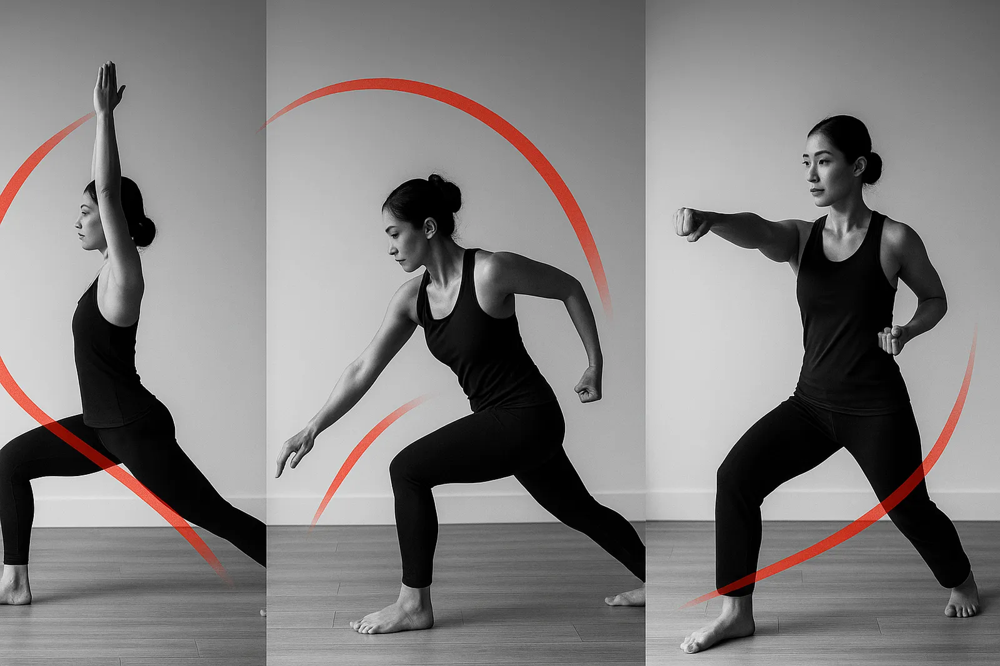
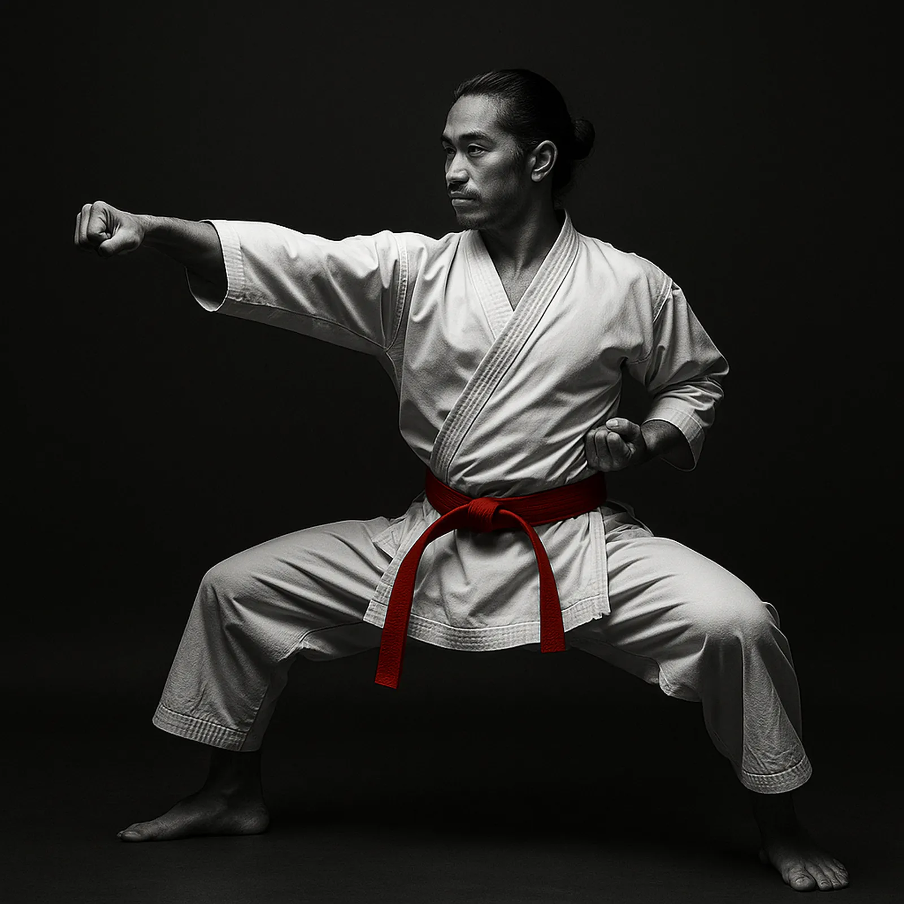
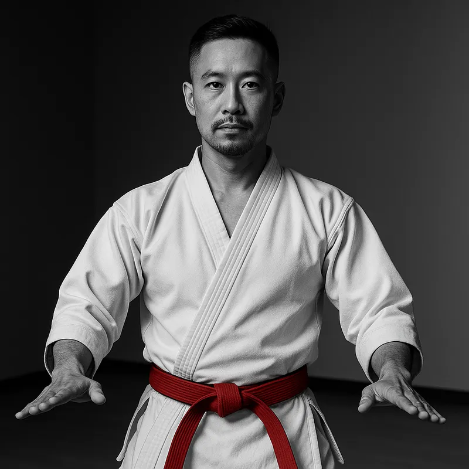
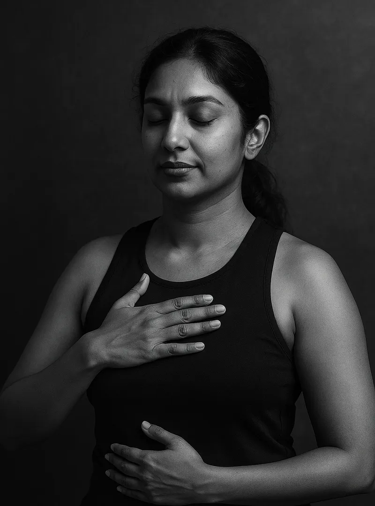
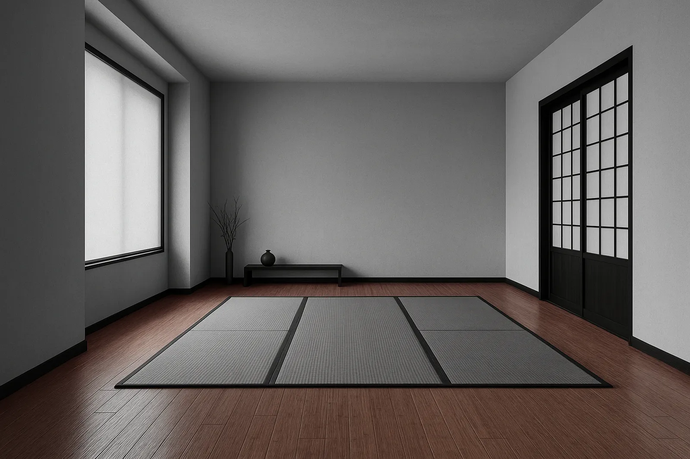

Breath, body, and movement as one. Every transition is linked to the breath—inhale to prepare, exhale to execute.
Discipline
Respect, consistency, and focus in practice. Showing up matters more than showing off.
Balance
Flexibility meets strength; softness meets strike. We train both simultaneously, as complementary forces.
Precision Before Intensity
Unlike the latest fitness trend promising transformation in twenty-eight days, Yogarate asks for sixty minutes, three times a week, and approximately forever. There's no quick fix, no certification after three weekends, no essential oils section. Just movement, breath, and repetition until your body remembers what it's forgotten.
We prefer slow, precise reps over fast, sloppy ones. Better to practise one strike correctly than a hundred without awareness. As form improves, speed and power emerge naturally—not as goals, but as byproducts of doing the work properly.

Flow
Seamless transitions blend salutations with kata-inspired footwork for mindful conditioning.

Power
Explosive yet controlled drills build strength and stability—precision before intensity.
Philosophy
Every month brings a new exercise philosophy promising to revolutionise your body, your mind, your entire existence. Most are thinly veiled marketing campaigns. Yogarate is neither yoga with a twist nor karate made gentle. It's two established practices integrated without hype, without supplements, without transformation narratives. Just breathe, move, repeat.
We believe strength without control is hollow, and stillness without purpose is stagnant. Wellness culture suggests you're broken and needs fixing. We suggest you're human and needs practising.
Core Principles
Harmony: Breath, body, and movement as one. Every transition is linked to the breath—inhale to prepare, exhale to execute. The nervous system finds rhythm when breath leads the body.
Discipline: Respect for tradition and consistency in practice. We bow to acknowledge the space, the lineage, and each other—not in submission, but recognition of what we're building together. Showing up matters more than showing off.
Balance: Flexibility meets strength without compromise. A stretched muscle without stability is vulnerable; a rigid muscle without mobility is brittle. We train both simultaneously, as complementary forces.
Mindfulness: Meditation in motion. Attention follows intention. Each kata becomes a moving meditation, each flow a meditation in motion. The mind trains with the body.
Community: Inclusive, supportive, non-competitive. There's no comparison, only progress. We practise together but honour individual journeys.
The Methodology
Every class follows a clear structure: breathe, mobilise, condition, restore. We start with breathwork to centre attention and activate the nervous system. Then we mobilise joints and prepare muscles for the work ahead. The main sequence blends flowing yoga transitions with precise karate positioning—balance while moving, stability within mobility. We end with restoration: holds, stretches, and visualisation that consolidate learning.
Why Hybrid Works
Yoga alone can lack progressive challenge—wonderful for recovery, less so for building strength. Karate alone can prioritise power over mobility—excellent for conditioning, problematic for longevity. Together, they create actual synergy (not the corporate kind): yoga's awareness deepens karate's precision; karate's structure strengthens yoga's flow. It's training that's both restorative and progressive, which most fitness fads claim but rarely deliver.
Precision Before Intensity
We prefer slow, controlled reps over fast, sloppy ones. Better to practise one strike correctly than a hundred without awareness. As form improves, speed and power emerge naturally—not as a goal, but as a byproduct of precision. This approach builds durable strength, reduces injury risk, and trains the nervous system for sustained performance.
"We bow in respect, not submission. We stretch in openness, not fragility. We strike in focus, not aggression."
Yogarate isn't about choosing between soft and hard, gentle and fierce, yin and yang. It's about recognising life demands both—and training both, consciously, without the binary thinking that plagues fitness culture.
Instructors

Alex Tan
Founder. 12 years teaching. Black belt (Shotokan), RYT-500. Tired of fitness culture's relentless novelty, Alex integrated two timeless disciplines into one practice—because efficiency doesn't require reinvention. Calm, precise, encouraging.

Maya Singh
Movement specialist. 8 years practice. Breathwork and mobility specialist. Believes sustainable progress beats short-term transformation. Focus: helping students move better, not just more. No before/after photos.
Journal
Why Balance Builds Power
In Yogarate, control precedes intensity. Stability allows honest strength and quicker recovery. Most injuries happen not from lack of strength but lack of control—which is precisely why fads prioritise intensity over precision…
Breath as a Metronome
Linking steps and strikes to steady inhales and exhales creates predictability for the nervous system. No breathing exercises from Instagram required—just linking breath to movement, like humans have done for millennia…
The Problem With "Wellness"
Modern fitness culture is obsessed with optimisation: tracking macros, counting steps, quantifying everything. Yogarate asks you to do one thing at a time, properly, until it becomes natural. Revolutionary, we know…
Classes
Yogarate Flow
Breath-led sequences, stability and balance without the spiritual bypassing. 45–60 min. No crystals, no affirmations, just movement.
Yogarate Power
Controlled explosive drills, stance work, and core alignment. Build strength without the cult of intensity. 45–60 min.
Yogarate Restore
Guided meditation, restorative holds, kata visualisation. Actually restorative, not just slow-pace cardio. 45 min.
No. Yoga experience helps but isn't required. Karate experience equally optional. We start with fundamentals and progress at your pace.
What should I bring?
Comfortable clothes that allow movement. Barefoot (we practise indoors). Water. That's it. No special equipment needed.
Is it intense?
It can be. But intensity isn't the goal—control is. You won't be shouted at or pushed beyond safe limits. Precision before intensity, always.
Do I need to book?
Book your first trial via the contact form. After that, regular class attendance is encouraged but not mandatory. Show up when you can.
What makes this different from yoga studios?
Two things: we integrate martial arts structure (kata, stance work), and we're allergic to spiritual bypassing. No candles, no crystals, no affirmations. Just practice.
The Space
Minimalist. Bamboo flooring. Tatami accents. Warm light. No clutter, no distractions. The focus is the practice, not the environment.

Try a 7-day Foundations series
No before/after photos required. No transformation promises. Just show up, practise, repeat. Beginner-friendly, equipment-light, logically structured.